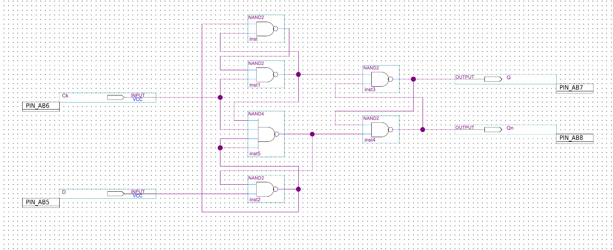
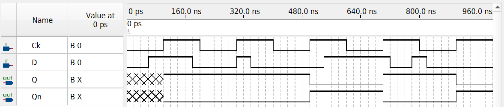

FPGA / SEQUENTIAL LOGIC
NAND-Based D Flip-Flop
A clocked storage element implemented using interconnected NAND gates and functionally verified in Intel/Altera Quartus Prime.
OVERVIEW
Clocked Data Storage
This project implements a D flip-flop using NAND-gate logic. The circuit stores one bit of information and updates its output according to the value present on the D input at the active clock edge.
The design provides both Q and Qn outputs, where Qn remains the logical complement of Q.
The original coursework project was recovered, reorganized, recompiled in Quartus Prime Lite 25.1, and functionally simulated again for portfolio verification.
DESIGN
NAND-Gate Implementation
The circuit is constructed from interconnected NAND gates that form the clocked gating and feedback network required for bistable storage.
D is the data input and Ck is the clock input. The output stage provides complementary Q and Qn signals.

SIGNALS
Inputs & Outputs
| Signal | Purpose |
|---|---|
| D | Data input |
| Ck | Clock input |
| Q | Stored output |
| Qn | Complementary output |
VERIFICATION
Functional Simulation
Functional verification was performed using the Quartus Simulation Waveform Editor with representative clock and data transitions.
The simulation confirms that Q captures the value of D on the active clock edge and holds that state between clock events.
Qn remains the complement of Q throughout the verified operation. The initial output state appears undefined until the first valid clock event because the design does not include a reset input.

RESULTS
Verified Operation
TOOLS